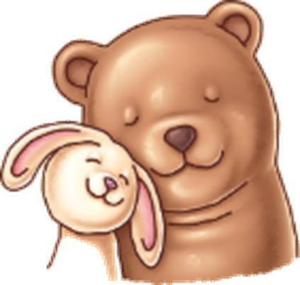

Baby Bunnies
Música, colo e repetição. A fase da escuta pura, em que o ouvido guarda sons que a boca ainda nem tenta.

abrindo o caderno…
Gramado · Rio Grande do Sul
Somos uma escola de imersão em inglês para crianças. Aqui ninguém traduz: canta-se, brinca-se, pede-se colo em inglês — do jeito que a primeira língua chegou. E, quando a aula acaba, a imersão vai embora junto com a criança, dentro de uma caixa.
O princípio por que imersão
Ninguém entregou uma lista de verbos para o seu filho aprender português. Ele ouviu, imitou, errou alto, riu do erro e tentou de novo — até a palavra virar dele. Imersão é devolver esse caminho ao inglês.
É por isso que a Bunny Bear existe em dois lugares ao mesmo tempo: dentro da sala, onde o idioma é o ar que se respira, e dentro da sua casa, onde ele precisa continuar respirando nos outros seis dias da semana.
— não damos aula de inglês. damos vida em inglês.
Pilar 01 presencial, em Gramado
Salas pensadas como casa, não como sala. Turmas pequenas, chão para sentar, material que suja a mão. E uma regra só: dentro da porta, fala-se inglês.


Chamada cantada, clima do dia, quem trouxe novidade. Ninguém é obrigado a falar — todo mundo é obrigado a ouvir.
Massinha, tinta, água, terra. O vocabulário do dia entra pela mão antes de entrar pela boca.
Um livro por dia, lido inteiro em inglês, com voz de personagem e pausa para palpite.
A hora mais produtiva: pedir, dividir, reclamar e agradecer — tudo em inglês, sem perceber.
Música, colo e repetição. A fase da escuta pura, em que o ouvido guarda sons que a boca ainda nem tenta.
O faz de conta assume. Cozinha, mercado, consultório — cenários inteiros montados para dar motivo de falar.
Entram a leitura e o traço. Projetos de duas, três semanas, com produto final para levar pra casa.
Turmas para irmãos maiores e para os pais que decidiram aprender junto. Mesma filosofia, outro repertório.
quer ver de perto?
Agendar aula experimental Gratuita, sem compromisso, com a turma da idade da sua criança.A imersão, não.
Pilar 02 assinatura mensal
Uma caixa por mês, com o nome da criança no envelope. Dentro, um pedaço inteiro do universo Bunny Bear — feito para ser aberto no chão da sala, de pijama, sem hora marcada. Você não precisa falar inglês.
0–7 anosenvio para todo o Brasilcancele quando quiser
E chega para a criança, não para você. Nome dela no envelope, lacre para ela romper.
Material espalhado no chão, vídeo na TV. Sua função é estar por perto e repetir junto.
As palavras do mês viram piada de família, música do banho, apelido do cachorro.
O que foi feito vai pra parede. No mês seguinte, uma nova batida na porta.
Pilar 01 + 02 o ciclo completo
Cinco manhãs por semana dentro de um ambiente onde o inglês não é conteúdo — é o meio. É onde nasce o repertório, a pronúncia e a coragem de falar errado.
Aprender uma língua é uma questão de reencontro. A Box pega o que foi vivido na sala e devolve em outro formato, em outro dia, com outra brincadeira — até virar dela.
Dá para ter só um dos dois? Dá. Muita família começa pela Box e depois matricula; outras estudam na escola e usam a Box só nas férias. Juntos, porém, o resultado é outro — e é por isso que assinantes matriculados têm condição especial.

“Bunny Bear não é só uma escola. É um universo que cresce junto com nossos pequenos!”
Teachers quem está do outro lado da porta

Teacher · turma Bunnies, 2 a 4 anos early years
Apresentação teacher.

Teacher · turma Bears, 5 a 7 anos 7 anos de casa
Apresentação teacher.

Teacher · conversação, 7 anos ou mais bilíngue nativa
Apresentação teacher.
Planos escolha por onde entrar
Matrícula aberta o ano todo, com vagas por turma e faixa etária.
12 caixas, 12 temas — um ano inteiro de continuidade, que é onde a fluência mora.
Seis meses para o ritual entrar na rotina da casa, sem compromisso longo.
É de uma escola? Montamos edições da Box para turmas inteiras, com adaptação curricular e formação para os professores. Falar sobre isso →
Não, e nem tenta. Aula é convivência, correção na hora e outras crianças — coisas que nenhuma caixa entrega. A Box é o que segura o idioma vivo nos dias em que não tem aula, e para quem mora longe de Gramado ela funciona como porta de entrada sem susto.
É exatamente para ela — nos dois pilares. Toda turma e toda edição da Box partem do zero absoluto e sobem pelo contexto, nunca pela gramática. Ninguém precisa saber nada para começar, só topar brincar.
Melhor ainda: vocês aprendem juntos e a criança vê um adulto errando sem drama. O guia dos pais traz a pronúncia escrita do jeito que se fala e o passo a passo da atividade. Não existe preparo prévio nem lição de casa para você.
Quinze minutos de vídeo por mês. O resto acontece espalhado, sozinho, no meio da rotina. A Box foi desenhada para famílias cansadas, não para famílias disponíveis.
A escola fica em Gramado, na serra gaúcha, e recebe turmas presenciais o ano todo. A Bunny Box sai daqui para todo o Brasil — no plano anual, com o frete já dentro do valor.
Dá, e é a combinação que mais recomendamos: o tema da caixa acompanha o calendário das turmas, então a criança reencontra em casa o que viveu na sala. Famílias matriculadas têm condição especial na assinatura — é só avisar na hora de fechar.
Escolha por onde começar — a gente responde no WhatsApp, geralmente no mesmo dia.